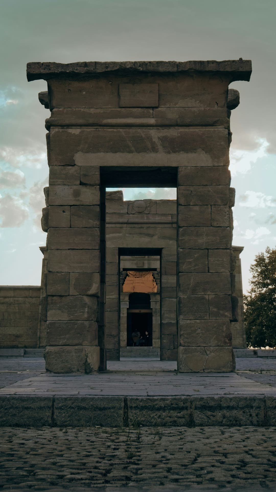
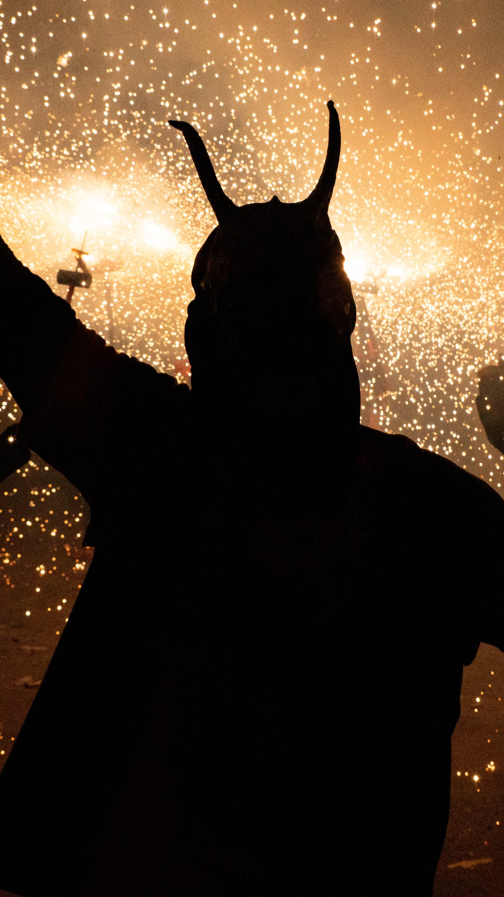
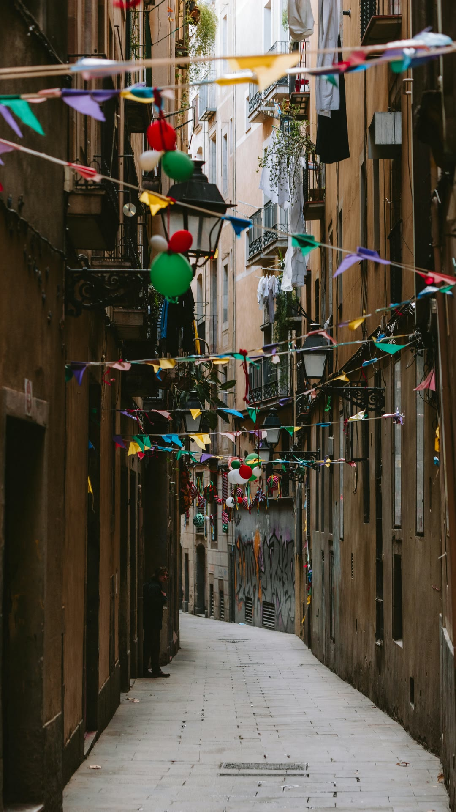
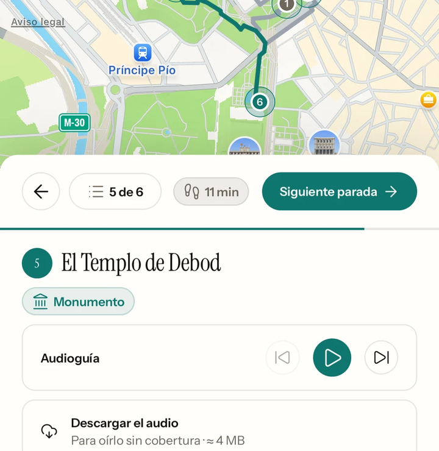
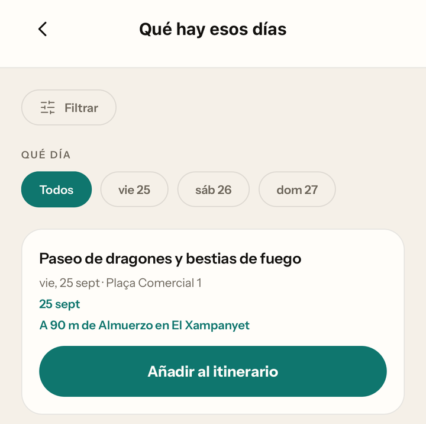
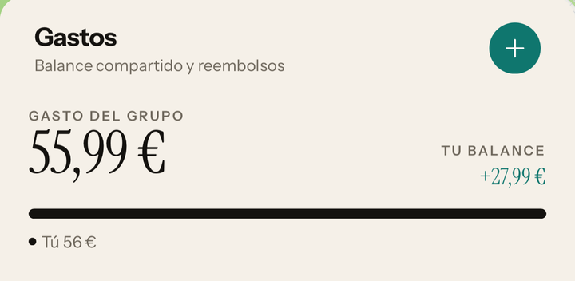

Templo de Debod · Madrid
La ciudad, contada.
Audioguía
Parada 5 · El Templo de Debod
Fue desmontado piedra a piedra,
empaquetado en miles de cajas
y transportado hasta este lugar.

Córdoba · tres días
Tú dices dónde.
Nomad lo escribe.
Qué hay esos días.

Los gastos, en paz.

Desde
2,99 €
el viaje.
Sin suscripción.

Nomad: guía de viajes

Pronto en Android